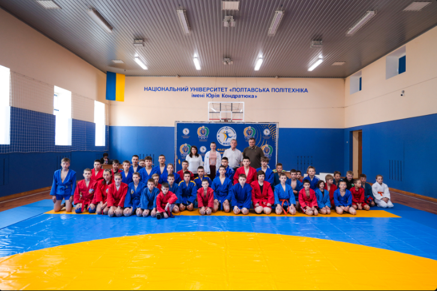

Університет запрошує взяти участь у пробних творчих конкурсах, що відбуватимуться на базі факультету фізичної культури та спорту Національний університет «Полтавська політехніка імені Юрія Кондратюка» запрошує вступників взяти участь у пробних творчих конкурсах для спеціальностей 024 «Хореографія» та 017 «Фізична культура та спорт». Пробні творчі випробування проходитимуть щосереди о 15.00 в спортивному залі (ауд.145 Ц) університету.
Команда Полтавської політехніки стала срібною призеркою Кубку України серед науково-педагогічних представників ЗВО з більярду «Вільна піраміда» Команда Національного університету «Полтавська політехніка імені Юрія Кондратюка» стала срібною призеркою благодійного особисто-командного Кубку України серед науково-педагогічних представників ЗВО з більярду «Вільна піраміда». А представниця Полтавської політехніки, Заслужений майстер – спорту України зі спортивного більярду Анастасія Коваленко стала володаркою Кубка України з вільної піраміди серед ЗВО України.

У політехніці пройшов Чемпіонат Полтавської області з боротьби самбо На надсучасній спортивній базі Національного університету «Полтавська політехніка імені Юрія Кондратюка» пройшов Чемпіонат Полтавської області з боротьби самбо. За першість в обласних змаганнях змагалися спортсмени з Полтави, Кременчука, Миргорода, Лубен, Горішніх Плавнів, Карлівки, Лохвиці та Кобеляк.
Команда політехніки стала чемпіонкою XVIII Універсіади Полтавщини з пляжного волейболу серед чоловіків Команда Національного університету «Полтавська політехніка імені Юрія Кондратюка» стала чемпіонкою XVIII Універсіади Полтавщини з пляжного волейболу серед чоловіків. Спортсмени політехніки продемонстрували високий рівень підготовки та злагоджену командну гру на волейбольному майданчику.
Студент ФФКС Єгор Мичко виборов срібну нагороду Чемпіонату України з триатлону серед молоді Студент факультету фізичної культури та спорту Національного університету «Полтавська політехніка імені Юрія Кондратюка» Єгор Мичко став срібним призером Чемпіонату України з триатлону (дуатлону), що проходив у місті Хмельницькому. Спортсмен політехніки виборов почесну медаль, здобувши перемогу серед молоді (ю23).